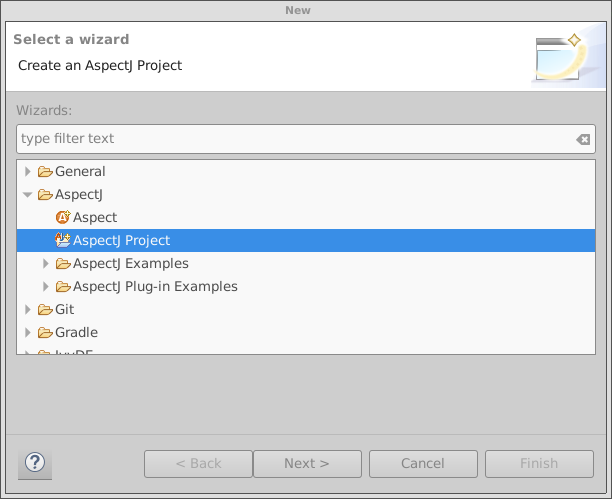
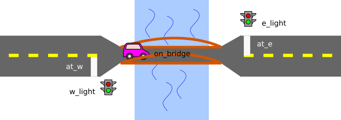

Ce devoir vous demande d'utiliser la librairie AspectJ. Vous devez d'abord installer dans Eclipse les AspectJ Development Tools (AJDT). Pour ce faire, cliquez sur Help, Eclipse Marketplace, cherchez le terme "AJDT" et installez la dernière version de cette extension en choisissant les options par défaut. Vous devez ensuite redémarrer Eclipse.
Par la suite, pour intégrer AspectJ dans votre projet, vous devez choisir New, et sous l'onglet AspectJ, choisir AspectJ Project:

On vous suggère de consulter un tutoriel en français sur les rudiments d'AspectJ dans Eclipse.
La seconde partie du devoir vous demande de modéliser des conditions sur des appels de méthodes et de les monitorer au moyen de la librairie BeepBeep. Tel que mentionné dans les diapositives du cours, la spécification est d'abord saisie dans un fichier, et un formulaire en ligne est utiliser pour automatiquement générer l'aspect monitorant la propriété. Dans ce cas, votre projet doit inclure la librairie beepbeep.jar. Des liens vers ces ressources dont donnés dans la page du cours.
Attention: il existe une autre version plus récente de BeepBeep située sur un autre site web. Pour les besoins de ce travail, il est bien important d'utiliser la librairie fournie (version 0.9.3).
On considère l'interface suivante, décrivant les méthodes d'une pile:
interface StackInterface {
public void push(Object t);
public Object pop();
public Object top();
public boolean isEmpty();
public int size();
}
Le programme suivant utilise la classe Stack, qui implémente l'interface
ci-dessus. Il ajoute des éléments à la pile puis retire ces éléments de la pile.
class Test {
public static void main(String[] args) {
StackInterface stack = new Stack();
for (int i = 0; i < 1500; i++) {
stack.push(i);
}
for (int i = 0; i < 1500; i++) {
stack.pop();
}
}
}
En utilisant AspectJ, écrivez trois aspects (appelés Aspect1, Aspect2, Aspect3) vérifiant chacune des trois règles suivantes du comportement de la pile:
Chacun des trois aspects devra afficher à la console (via System.out.println) le message "Erreur de la propriété X" immédiatement avant un appel de méthode violant la propriété X (1, 2 ou 3). Pour illustrer le bon fonctionnement de vos trois aspects, écrivez également trois programmes Main, appelés Main1, Main2, Main3, qui utilisent incorrectement la pile.
Sur le site du cours se trouve l'archive Teller.zip contenant un certain nombre de classes Java, incluant une classe Bank qui propose un ensemble de méthodes pour effectuer des transactions financières, selon l'interface suivante:
class Bank {
public void open(int accountNo);
public void close(int accountNo);
public boolean isApproved(int accountNo, int amount);
public void withdraw(int accountNo, int amount);
}
La classe Teller est un programme simple permettant à l'utilisateur d'invoquer ces différentes opérations par le biais d'un menu à la ligne de commande. On doit cependant respecter les contraintes suivantes en utilisant la banque:
On suppose que toutes les opérations sont effectuées avec le même numéro de compte.
Écrivez une spécification LTL-FO+ permettant de monitorer ces contraintes, en utilisant le moniteur BeepBeep. Tissez l'aspect résultant aux classes Bank et Teller et constatez en utilisant le programme que les séquences interdites sont bien interceptées par le moniteur.
Dans cette dernière partie, on vous demande de modéliser le fonctionnement d'un système de feux de circulation contrôlant l'accès à un pont doté d'une seule voie. La figure ci-dessous illustre la situation:

Sous la surface de la route se trouvent des senseurs pour détecter si des voitures sont présentes à certains endroits. Les senseurs sont:
Deux feux de circulation contrôlent l'accès au pont: w_light représente le feu du côté ouest, et e_light celui du côté est. Chacun de ces deux feux peut être soit dans l'état green (feu vert) ou red (feu rouge). Pour les besoins de la modélisation, on suppose que lorsqu'un des feux devient vert, il le reste pour trois pas de temps. Le passage des voitures est tel que, si le senseur at_w détecte une voiture, le senseur on_bridge détecte cette même voiture au pas de temps suivant, et la voiture est sortie du modèle dans l'état suivant (raisonnement similaire pour at_e).
Écrivez un modèle NuSMV représentant cette situation. De plus, rédigez des formules LTL représentant les propriétés que votre modèle doit respecter:
Ces formules doivent être clairement identifiées et figurer dans la partie LTLSPEC de votre fichier.
Enfin, vérifiez si, dans votre modèle, les propriétés suivantes sont vraies en écrivant des propriétés CTL:
Ces formules doivent être clairement identifiées et figurer dans la partie SPEC de votre fichier. Au moyen de commentaires, dites si les formules correspondantes sont vraies ou non, et expliquez brièvement pourquoi.
Produisez une archive selon les directives suivantes:
Le devoir sera évalué selon la grille de correction suivante:
| Élément | Points |
|---|---|
| Aspect 1 | 1 |
| Aspect 2 | 2 |
| Aspect 3 | 2 |
| Syntaxe LTL-FO+ | 1 |
| Propriété 1 | 2 |
| Propriété 2 | 2 |
| Propriété 3 | 2 |
| Syntaxe NuSMV | 1 |
| Formule LTL 1 | 1 |
| Formule LTL 2 | 1 |
| Formule LTL 3 | 1 |
| Formule LTL 4 | 1 |
| Formule LTL 5 | 1 |
| Formule CTL 1 | 1 |
| Formule CTL 2 | 1 |
| TOTAL | 20 |